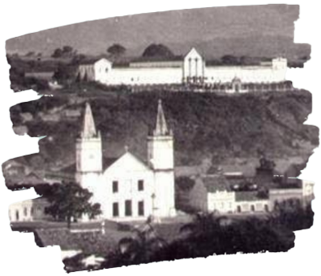

A capital da cultura do Cariri
Cidade com uma rica história que se entrelaça com o desenvolvimento do interior nordestino. Conhecida como o "Oásis do Sertão" devido às suas características climáticas mais úmidas, a cidade tem muito a oferecer tanto em termos de cultura quanto de beleza natural.
Antes da chegada dos colonizadores europeus, a região do Crato era habitada por povos indígenas, principalmente os Cariri. A cidade foi fundada no século XVIII, em um local estratégico que facilitava o acesso a outras regiões e o desenvolvimento das atividades econômicas.
Durante o período colonial, Crato se desenvolveu como um importante centro econômico, graças à fertilidade do solo e à produção de algodão e café. A cidade também se tornou um ponto de encontro de viajantes e comerciantes, o que impulsionou seu crescimento urbano.
No século XIX, Crato passou por diversas transformações sociais e políticas. A cidade participou ativamente de importantes movimentos históricos, como a Guerra dos Cabanos e a Revolta dos Beckman. Além disso, a abolição da escravatura e a proclamação da República também tiveram um grande impacto na sociedade cratense.
Ao longo de sua história, Crato desenvolveu uma identidade cultural única, marcada pela influência de diferentes povos e culturas. A cidade é conhecida por sua rica tradição musical, com destaque para o forró e o xote. A religiosidade também é um aspecto importante da cultura cratense, com diversas festas e procissões religiosas ao longo do ano.